Grupo 1: Rússia x Ucrânia
Clique em um dos botões abaixo para explorar o conteúdo completo.
Onde acontece o conflito?

Países envolvidos: Rússia e Ucrânia são os principais países envolvidos diretamente na guerra. Belarus também participa indiretamente, permitindo que forças russas utilizem seu território.
Capitais: A capital da Ucrânia é Kyiv (Kiev), a da Rússia é Moscou e a de Belarus é Minsk.
Continente: O conflito acontece no continente europeu, principalmente na região conhecida como Leste Europeu.
Fronteiras: A Ucrânia faz fronteira com Rússia, Belarus, Polônia, Eslováquia, Hungria, Romênia e Moldávia. Ao sul, possui acesso ao Mar Negro e ao Mar de Azov.
Localização geográfica: A Ucrânia está localizada entre a Europa Central e a Rússia, ocupando uma posição estratégica de ligação entre os países europeus e o território russo.
Recursos naturais existentes: A Ucrânia possui carvão mineral, minério de ferro, manganês, gás natural e terras muito férteis, utilizadas para a produção de trigo, milho e girassol. A Rússia possui grandes reservas de petróleo, gás natural, carvão e outros minerais.
Importância estratégica da região: A região possui grande importância econômica e política devido ao acesso ao Mar Negro, aos portos comerciais, às rotas de transporte, à produção agrícola e às reservas de recursos naturais.
Feito por Ruan Victor Del Bianco Carvalho
Como surgiu o conflito e contexto histórico
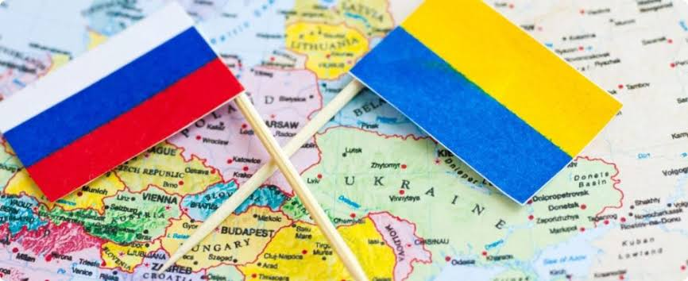
As raízes históricas entre Rússia e Ucrânia remontam ao século IX, quando surgiu o Rus de Kiev, uma importante organização política medieval que contribuiu para a formação histórica e cultural dos povos eslavos da região.
Durante séculos, partes do território ucraniano ficaram sob domínio de diferentes impérios, incluindo o Império Russo. Em 1922, a Ucrânia passou a integrar a União Soviética (URSS).
Em 1991, com o fim da União Soviética, a Ucrânia conquistou sua independência. A partir daí, o país passou a buscar maior aproximação com a Europa e com países ocidentais, enquanto a Rússia procurava manter sua influência na região.
As tensões aumentaram principalmente em 2014, com a anexação da Crimeia pela Rússia e os conflitos no leste ucraniano. Em 24 de fevereiro de 2022, a Rússia iniciou uma invasão em larga escala contra a Ucrânia.
Disputas Políticas
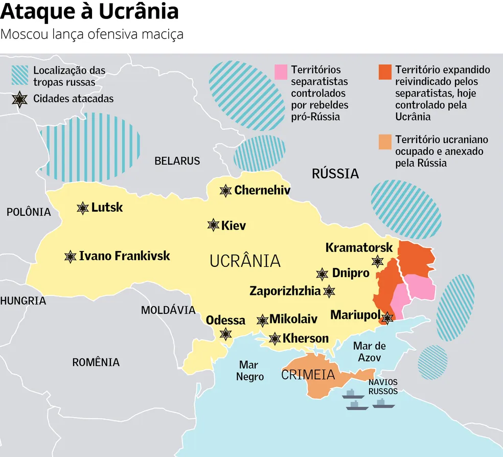
Um dos principais motivos das tensões é a aproximação da Ucrânia com a União Europeia e a possibilidade de integrar a OTAN (Organização do Tratado do Atlântico Norte).
A Rússia considera a expansão da influência militar ocidental próxima de suas fronteiras uma ameaça à sua segurança nacional.
Por outro lado, a Ucrânia defende sua independência, soberania e o direito de escolher suas próprias alianças políticas e militares.
Outro ponto importante é a disputa pelo controle e influência sobre a Crimeia e as regiões de Donetsk e Luhansk, localizadas no leste ucraniano.
Fatores Econômicos
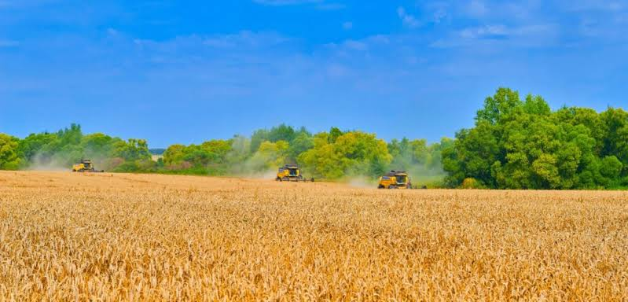
A Ucrânia possui grandes áreas de terras férteis, sendo uma importante produtora e exportadora de trigo, milho e outros produtos agrícolas.
Outro fator importante é sua localização estratégica para o transporte de gás natural e outras mercadorias entre a Rússia e os países europeus.
A Rússia é uma grande produtora e exportadora de petróleo e gás natural. Por isso, a energia também possui grande importância nas relações econômicas e políticas do conflito.
A guerra provocou destruição de infraestrutura, dificuldades no comércio internacional, aumento de custos energéticos e prejuízos econômicos para diversos países.
Fatores Étnicos e Religiosos

Fatores Étnicos: A Ucrânia possui uma população formada principalmente por ucranianos, mas também possui minorias étnicas, incluindo russos. O idioma russo é falado por parte da população, especialmente em algumas regiões do leste e do sul.
Essas diferenças linguísticas e culturais fazem parte da história do país, mas não significam que todos os habitantes dessas regiões tenham as mesmas opiniões políticas.
Fatores Religiosos: A maioria dos ucranianos possui tradição cristã ortodoxa. Existem diferentes igrejas ortodoxas no país, incluindo a Igreja Ortodoxa da Ucrânia, que recebeu reconhecimento de autocefalia em 2019.
A questão religiosa também possui importância cultural e política, pois representa uma disputa de influência entre instituições religiosas ligadas à Ucrânia e à Rússia.
Principais Acontecimentos — Linha do Tempo
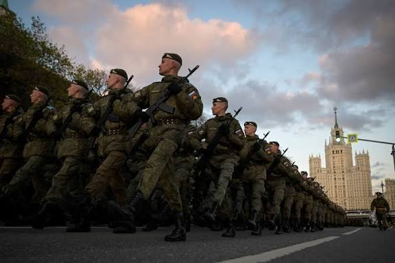
- Século IX — Rus de Kiev Surge uma importante organização política medieval, considerada parte das raízes históricas de russos e ucranianos.
- 1922 — Formação da URSS A Ucrânia passa a integrar a União das Repúblicas Socialistas Soviéticas.
- 1991 — Independência da Ucrânia Com o fim da União Soviética, a Ucrânia conquista sua independência.
- 2004 — Revolução Laranja Grandes manifestações acontecem após uma eleição presidencial contestada, fortalecendo movimentos favoráveis a reformas democráticas e à aproximação com o Ocidente.
- 2013 — Protestos de Euromaidan Manifestações começam após o governo ucraniano suspender um acordo de aproximação com a União Europeia.
- 2014 — Anexação da Crimeia A Rússia ocupa e anexa a Crimeia, território internacionalmente reconhecido como parte da Ucrânia.
- 2014 — Conflito no Donbass Começam confrontos entre forças ucranianas e separatistas apoiados pela Rússia nas regiões de Donetsk e Luhansk.
- 2019 — Igreja Ortodoxa da Ucrânia A Igreja Ortodoxa da Ucrânia recebe o reconhecimento de sua independência religiosa pelo Patriarcado Ecumênico.
- 2022 — Invasão em larga escala Em 24 de fevereiro, a Rússia inicia uma invasão em larga escala contra o território ucraniano.
- 2023 — Continuação da guerra Os combates continuam, com impactos humanitários, econômicos e políticos em diferentes partes do mundo.
- 2024 — Guerra prolongada O conflito continua, com ataques, disputas territoriais e apoio internacional aos dois lados.
- 2025 — Continuidade das negociações A guerra permanece sem uma solução definitiva, enquanto acontecem iniciativas diplomáticas e negociações para buscar o fim dos combates.
Feito por Victor Matos Minucci Volpe
Governos e países diretamente envolvidos
Rússia
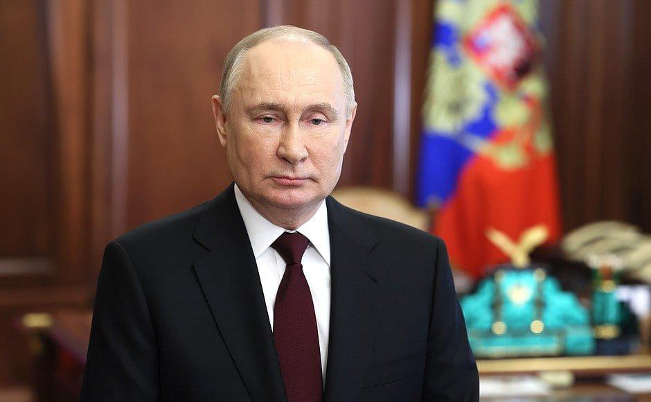
Rússia: governo de Vladimir Putin, responsável pela invasão em grande escala da Ucrânia em fevereiro de 2022.
Ucrânia
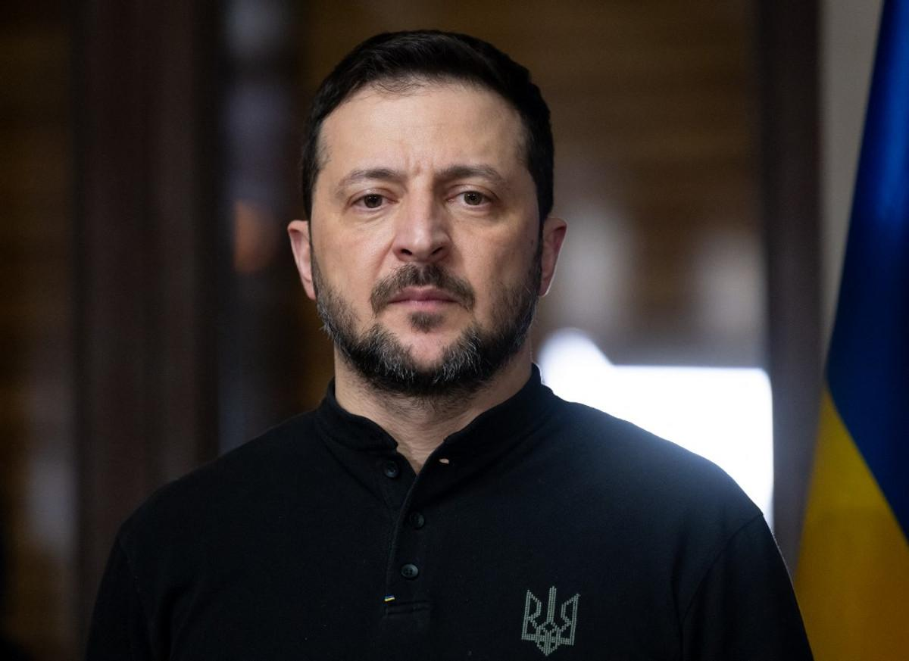
Ucrânia: governo de Volodymyr Zelensky, que organiza a defesa do território ucraniano.
Grupos armados e forças militares
Forças Armadas da Ucrânia
Exército oficial Ucraniano
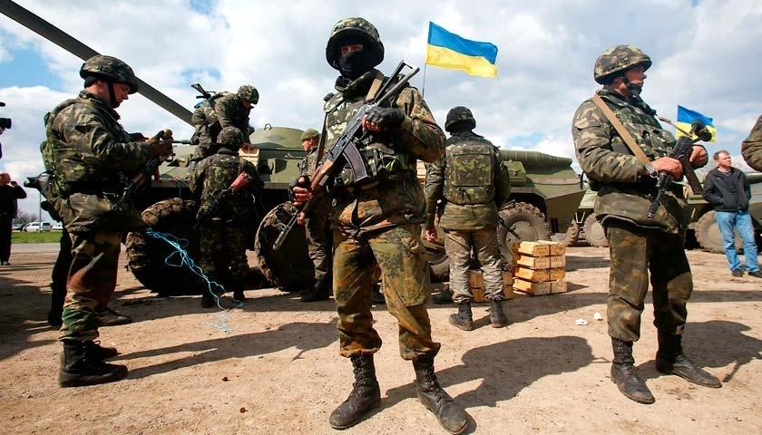
São responsáveis por defender o território ucraniano, proteger cidades e combater as tropas russas. Recebem equipamentos e treinamento de países aliados.
Brigada Azov
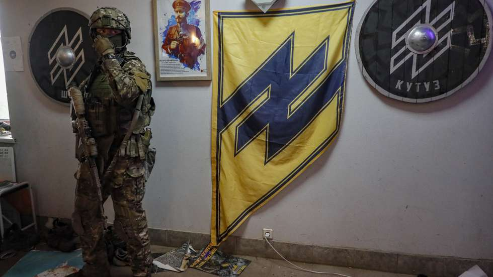
Unidade militar ucraniana que faz parte da Guarda Nacional. Ficou conhecida pela defesa de Mariupol em 2022 e continua integrada às forças ucranianas.
Forças Armadas da Rússia
Exército oficial Russo
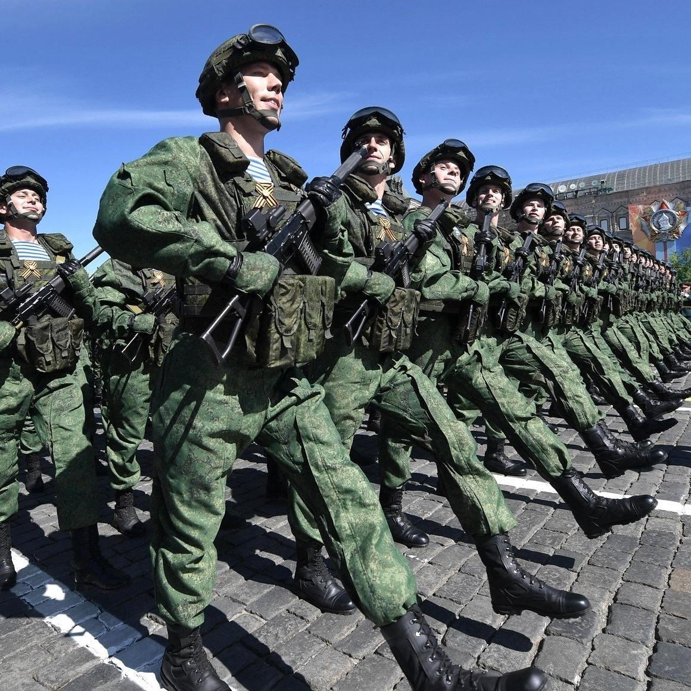
São responsáveis pelas operações militares russas, utilizando soldados, tanques, aviões, artilharia e mísseis para atacar posições ucranianas.
Grupo Wagner
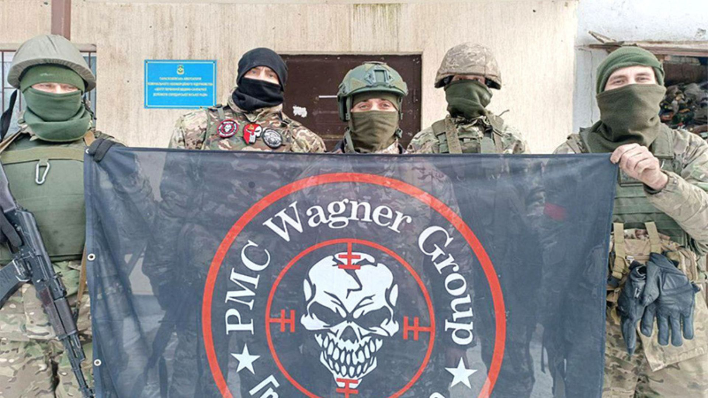
Grupo militar privado russo que teve grande participação na guerra, principalmente na batalha de Bakhmut. Em 2023, sofreu uma rebelião contra o governo russo e depois perdeu sua antiga estrutura de atuação.
Feito por Danilo Rafael Pedrozo Moreira
Quais interesses estão envolvidos?
Conheça os principais interesses econômicos, territoriais, políticos e estratégicos envolvidos na guerra entre Rússia e Ucrânia.
1. Petróleo e gás natural
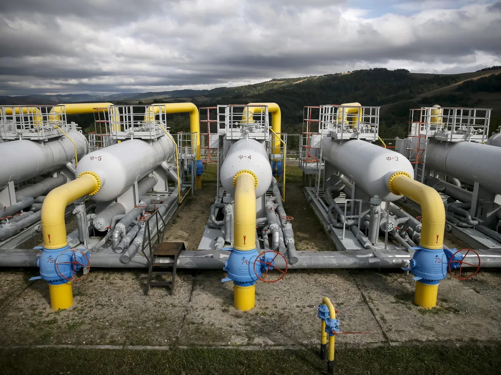
O petróleo e o gás natural são recursos fundamentais para a economia, utilizados no abastecimento de transportes, indústrias e residências. A Rússia possui enormes reservas desses recursos e é uma das principais produtoras e exportadoras mundiais.
A Ucrânia também possui reservas próprias de petróleo e gás, além de uma localização estratégica para o transporte de energia até a Europa.
Principais interesses:
- Rússia: manter sua influência no mercado internacional de energia.
- Ucrânia: explorar seus recursos e reduzir a dependência energética externa.
- Europa: encontrar fornecedores alternativos para diminuir a dependência do gás russo.
2. Minérios e recursos naturais
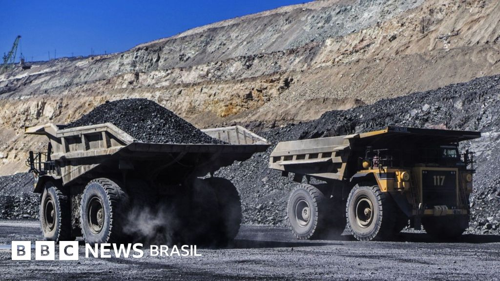
A Ucrânia possui importantes reservas de ferro, lítio, titânio, grafite e manganês. Esses minerais são utilizados na fabricação de aço, baterias, veículos elétricos, máquinas e equipamentos militares.
A Rússia também possui grandes reservas minerais, incluindo níquel, cobre, ouro e ferro.
Principais interesses:
- Controlar regiões ricas em recursos minerais.
- Garantir matérias-primas para indústrias e tecnologias.
- Fortalecer a produção industrial e militar.
- Explorar recursos que possuem grande valor econômico.
3. Água e energia nuclear
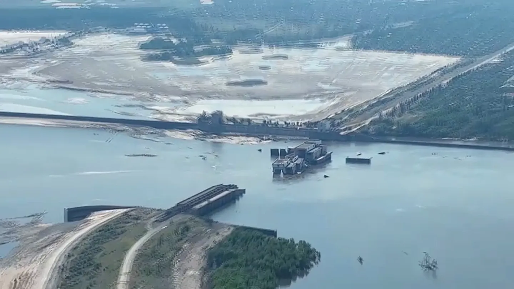
A água é essencial para o abastecimento da população, a agricultura, as indústrias e a geração de eletricidade. Por isso, rios, barragens e reservatórios possuem grande importância estratégica.
A Ucrânia depende de grandes rios, como o Dnipro, para abastecimento de cidades e irrigação agrícola. A Crimeia também possui importância nessa questão, pois enfrentou problemas de abastecimento após a interrupção do fornecimento pelo Canal da Crimeia do Norte em 2014.
Em junho de 2023, a barragem de Kakhovka foi destruída, provocando inundações e prejudicando o abastecimento de água, a agricultura e o meio ambiente.
Outro ponto estratégico é a usina nuclear de Zaporizhzhia, a maior da Europa, ocupada por forças russas desde 2022. Sua situação representa uma preocupação internacional relacionada à segurança nuclear.
Principais interesses:
- Controlar fontes de abastecimento de água.
- Garantir água para a população e a agricultura.
- Controlar estruturas importantes para a geração de energia.
4. Rotas comerciais e agricultura
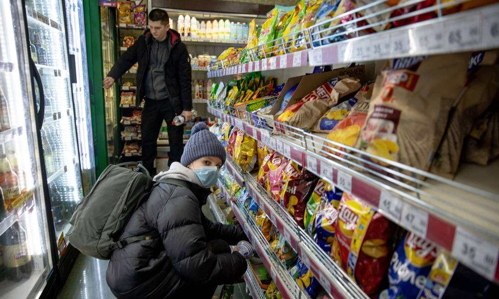
A localização da Ucrânia, próxima ao Mar Negro e ao Mar de Azov, torna seu território importante para o comércio internacional. Seus portos são utilizados para transportar alimentos, combustíveis e matérias-primas.
A Ucrânia é uma importante exportadora de trigo, milho e óleo de girassol. Já a Rússia utiliza portos do Mar Negro e do Mar de Azov para exportar petróleo, fertilizantes, grãos e outros produtos.
Principais interesses:
- Controlar portos e rotas marítimas estratégicas.
- Garantir a exportação de alimentos e matérias-primas.
- Manter o acesso ao Mar Negro.
- Preservar a importância comercial dos dois países.
5. Territórios disputados
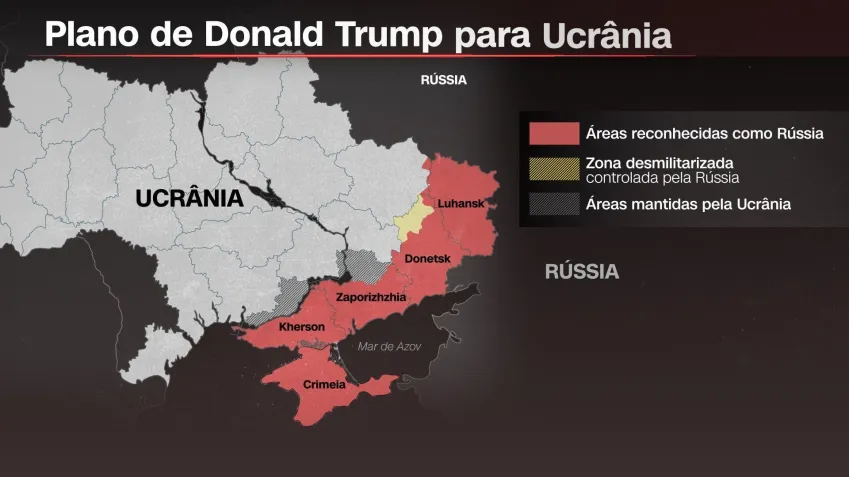
A disputa territorial é um dos principais elementos da guerra. A Rússia ocupa e reivindica regiões ucranianas consideradas estratégicas, enquanto a Ucrânia busca recuperar esses territórios e preservar sua integridade territorial.
Principais regiões:
- Crimeia: península anexada pela Rússia em 2014, importante pela localização no Mar Negro e pela base naval de Sebastopol.
- Donetsk: região industrial do leste ucraniano, conhecida por suas atividades mineradoras e siderúrgicas.
- Luhansk: região do Donbas, importante pela mineração de carvão e pela indústria.
- Zaporizhzhia: região importante pela indústria, agricultura e usina nuclear.
- Kherson: região do sul, importante pela agricultura, pelos rios e pelo acesso ao Mar Negro.
A Rússia declarou a anexação dessas quatro regiões em 2022, além da Crimeia em 2014. Entretanto, essas anexações não são reconhecidas pela Ucrânia nem pela maior parte da comunidade internacional.
6. Indústria e economia
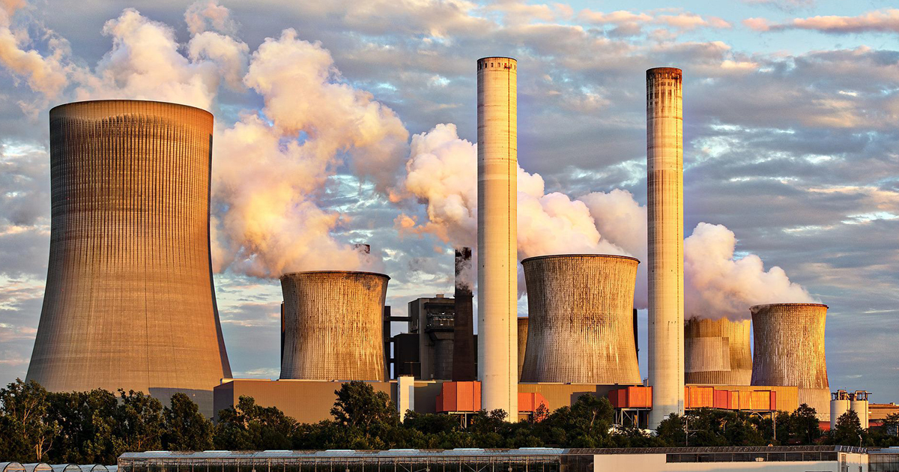
A Ucrânia possui indústrias siderúrgicas, metalúrgicas, químicas e de produção de máquinas. A Rússia também possui uma economia industrial ligada à energia, mineração e fabricação de equipamentos militares.
Principais interesses:
- Preservar fábricas e centros industriais.
- Controlar áreas de produção e matérias-primas.
- Fortalecer a economia e a capacidade industrial.
7. Influência internacional e segurança militar
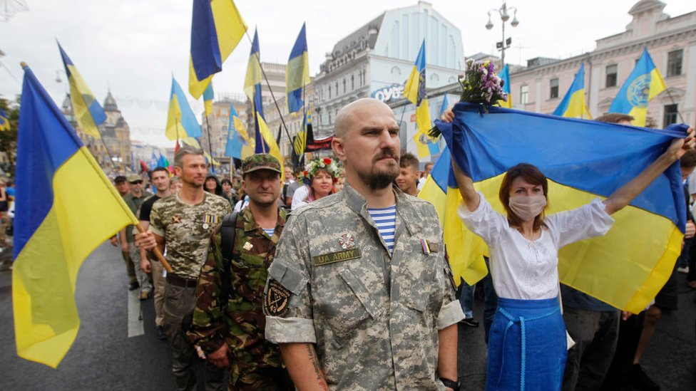
A guerra não envolve somente Rússia e Ucrânia. Diversos países e organizações internacionais participam indiretamente do conflito por meio de apoio militar, econômico, financeiro e diplomático.
Principais participantes internacionais:
- Estados Unidos: fornecem apoio militar, financeiro e diplomático à Ucrânia.
- União Europeia: oferece recursos financeiros, ajuda humanitária e aplica sanções econômicas contra a Rússia.
- OTAN: coopera com a defesa ucraniana por meio de equipamentos e treinamento, mas a Ucrânia não é membro da aliança.
- China: mantém relações econômicas e diplomáticas importantes com a Rússia e busca preservar seus interesses internacionais.
- Bielorrússia: é aliada da Rússia e permitiu que seu território fosse utilizado como ponto de apoio para a invasão de 2022.
A aproximação da Ucrânia com a OTAN também está relacionada às preocupações russas com a segurança e a influência militar ocidental na região.
Conclusão
A guerra entre Rússia e Ucrânia envolve muito mais do que uma disputa territorial. O conflito também está relacionado ao controle de recursos naturais, à produção de energia, às rotas comerciais, à economia e à influência internacional.
Esses interesses tornam a guerra importante não apenas para os dois países, mas também para a Europa e para o restante do mundo.
Feito por Raphael Gustavo de Lima Gomes
Quais os impactos da guerra?
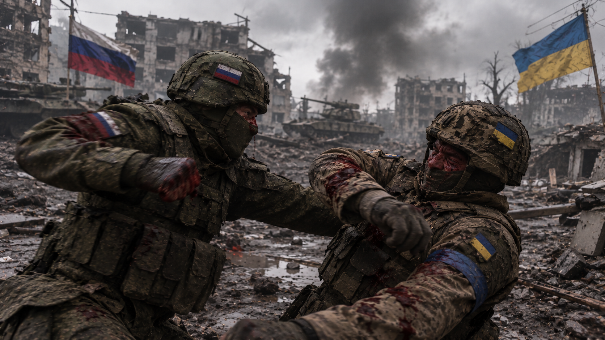
1. Crise humanitária e refugiados
O conflito provocou uma grave crise humanitária na região. Milhões de pessoas foram forçadas a abandonar suas casas e comunidades em busca de segurança, gerando uma das maiores crises de refugiados na Europa desde a Segunda Guerra Mundial.
2. Destruição da infraestrutura
Cidades inteiras, hospitais, escolas, residências, estradas, pontes e redes de abastecimento elétrico e hídrico foram severamente danificados ou destruídos. A reconstrução dessas estruturas representa um desafio de décadas.
3. Falta de alimentos, água e suprimentos
Em diversas áreas atingidas pelos combates, a população enfrenta graves dificuldades para conseguir alimentos, água potável, aquecimento, medicamentos e cuidados médicos essenciais, agravando o sofrimento civil.
4. Impactos econômicos globais
A guerra prejudicou o comércio internacional, gerou inflação mundial, elevou os custos dos combustíveis e da energia na Europa e provocou alta nos preços globais de alimentos e fertilizantes.
5. Consequências políticas e diplomáticas internacionais
O conflito alterou drasticamente as relações diplomáticas no mundo, intensificou as sanções econômicas contra a Rússia, fortaleceu as alianças ocidentais e redefiniu os gastos com defesa de vários países.
6. Impactos de longo prazo na população
Crianças, idosos e famílias enfrentam trauma psicológico profundo, interrupção de estudos e perda de moradia. Os efeitos sociais e de saúde mental da guerra permanecerão por gerações.
Feito por Pedro Henrique Ozeldi Valentim